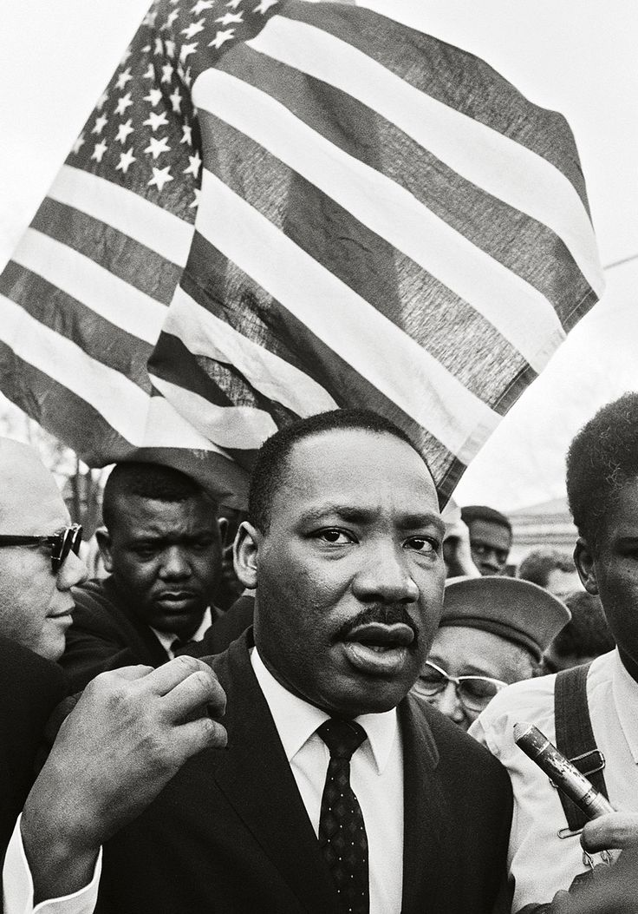

Civil Rights Icon
A transformative leader whose vision and courage drove the U.S. Civil Rights Movement.
About Martin Luther King Jr
Martin Luther King Jr., born on January 15, 1929, was a Baptist minister and civil rights leader who significantly impacted race relations in the United States starting in the 1950s. He led the Southern Christian Leadership Conference (SCLC) and used nonviolent activism to combat racial segregation. His efforts contributed to the Civil Rights Act of 1964 and the Voting Rights Act of 1965. King received the Nobel Peace Prize in 1964 for his work. Tragically, he was assassinated on April 4, 1968, but remains one of the most influential civil rights leaders in history. Martin Luther King Jr. married Coretta Scott on June 18, 1953, after meeting her while studying in Boston. Coretta, an aspiring musician, played a key role in King’s life, supporting him emotionally and hosting meetings for the Civil Rights Movement at their home. King often said her strength helped him through the challenges of his work.The couple had four children: Yolanda (born in 1955), Martin Luther King III (1957), Dexter (1961), and Bernice (1963). Despite being away often for his activism, King spent time with his children when he could, playing with them and discussing important issues during meals.King chose to live modestly, using only his pastor’s salary to support his family. Although he enjoyed small luxuries like nice suits and dining out, he remained humble. At home, King was known for his sense of humor and warmth, showing a lighter side that balanced his serious public role.
Background
Martin Luther King Jr. was born to Michael Luther King Sr. and Alberta Williams King, who raised him in a loving and disciplined home with his older sister, Willie, and younger brother, Alfred. His grandfather, A.D. Williams, was a minister who transformed Ebenezer Baptist Church in Atlanta into a large congregation. King’s father later became pastor of the same church and strongly opposed racism, which influenced Martin Jr. deeply.Growing up in Atlanta, King started school at five years old and was baptized at age seven. At 12, he experienced a traumatic loss when his grandmother died of a heart attack while he was at a parade against his parents' wishes. Overcome with guilt, he attempted suicide by jumping from a second-story window. This event marked a difficult moment in his early life.
Martin Luther King Jr. attended Booker T. Washington High School, where he was an advanced student, skipping both the 9th and 11th grades. At just 15 years old, he entered Morehouse College in Atlanta in 1944. While initially unmotivated and coasting through his first two years, King was popular among his classmates, especially with the girls. Over time, his experiences with racism began shaping his interest in activism. By his time at Morehouse, King started envisioning himself as part of the fight for civil rights, aiming to break down racial barriers. Reflecting on this period, he described becoming deeply interested in political and social issues. This laid the groundwork for his later role as a social justice leader.
Achievements
Doctorate in Theology
(1955): Earned his Ph.D. in Systematic Theology from Boston University at the age of 25.
Montgomery Bus Boycott
(1955 - 1960):Led the boycott that resulted in the Supreme Court ruling segregated buses unconstitutional, marking one of the first major victories of the Civil Rights Movement.
Founding of the Southern Christian Leadership Conference
(SCLC, 1957): Co-founded the organization to coordinate nonviolent civil rights protests across the South.
Greensboro Sit-Ins
(1960}:Supported and amplified the student-led sit-ins, helping to end segregation in lunch counters across 27 southern cities.
Facts
Martin Luther King, Jr., (January 15, 1929-April 4, 1968) was born Michael Luther King, Jr., but later had his name changed to Martin.
- The Martin Luther King Jr. Memorial in Washington, D.C., was dedicated on August 28, 2011.
- His life and work have been honored with a national holiday, schools and public buildings named after him, and a memorial on Independence Mall in Washington, D.C.
- Martin Luther King Jr was imprisoned 29 times.